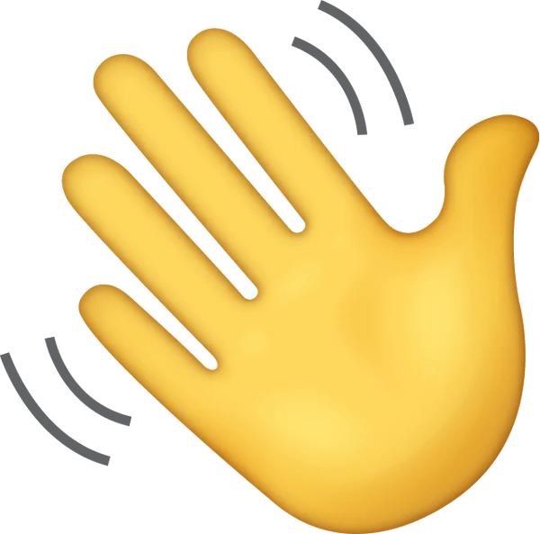
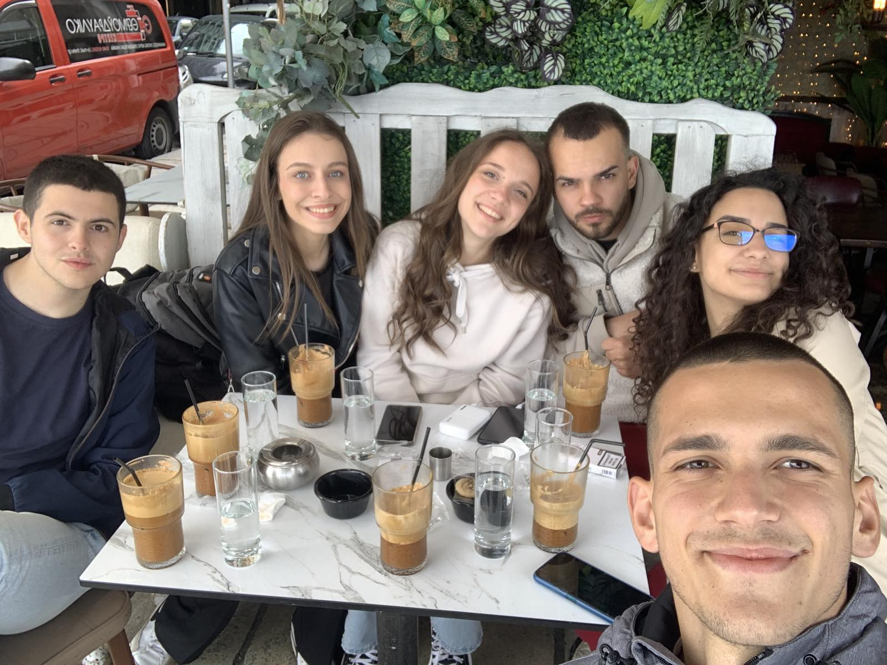
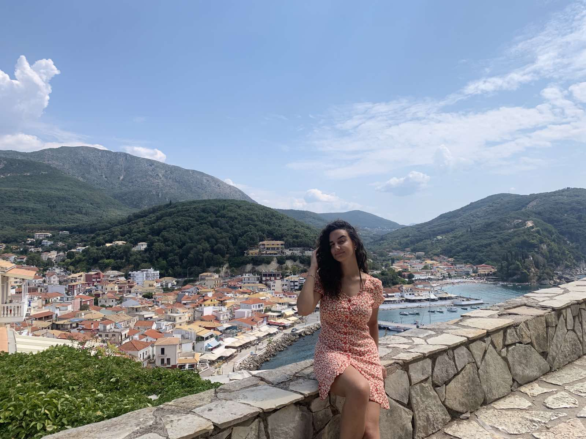

 Добредојдовте на мојата веб страна!
Биографија
Здраво! Јас сум Сандра Ацевска, студент во прва година на Факултетот за Информатички Науки и Компјутерско Инженерство. Родена сум во Скопје, каде што живеам и студирам. Од секогаш ме фасцинирале технологијата и компјутерите, што ме мотивираше да ја изберам оваа насока за моето образование.
Покрај студиите, учествувам во студентски организации и клубови, каде што се запознавам со луѓе со слични интереси и работам на различни проекти. Верувам дека соработката и размената на идеи се клучни за развојот и успехот.
Оваа веб-страница е мојот начин да се претставам и да споделам дел од моите искуства и интереси.
Сакам да создадам простор каде што можам да ги споделам моите достигнувања, хобија и патувања.
Во слободно време, сакам да читам книги, да патувам и да тренирам. Верувам дека балансот помеѓу физичката активност и менталниот развој е клучен за успешен и исполнет живот.
Со нетрпение очекувам да споделам повеќе за моите идни проекти и достигнувања на оваа веб-страница. Благодарам што ја посетивте и се надевам дека ќе најдете инспирација и мотивација во мојата приказна.
Образование
Завршив средно училиште во гимназијата "Орце Николов" во Скопје, која е позната по своите високи образовни стандарди и извонредни резултати. Ова училиште ми овозможи квалитетно образование и ме поттикна да се развивам во многу области. Подрачјето за кое се одлучив беше Природно-Математичко, комбинација А, кое во голема мера ме подготви за сегашните студии и ми овозможи силна основа во науките и математиката.
Во моментов студирам на Факултетот за Информатички Науки и Компјутерско Инженерство (ФИНКИ), на насоката Софтверско Инженерство и Информациски Системи (СИИС). Овие студии претставуваат извонредна можност за мојот академски и професионален развој.
Навистина уживам во материјалот и предизвиците што ги носи оваа насока. Дополнително, имам можност да работам на интересни проекти и да соработувам со професори и колеги кои се исто така страсни за оваа област.
Студиите на ФИНКИ ми овозможуваат не само теоретско знаење, туку и практични вештини кои се неопходни за успешна кариера во ИТ индустријата. Се радувам на секој нов предизвик и сум уверена дека овие студии ќе ми отворат многу врати во иднината.
Хобија
Во слободното време, уживам да читам книги. Особено се воодушевувам од научната фантастика и психолошките трилери.
Покрај читањето, често време поминувам со пријателите. Се воодушевувам од социјалните активности како кафе, вечери или прошетки, што ми помага да се опуштам и да се поврзам со луѓето околу мене.

Спортот игра значајна улога во мојот живот. Одбојката е мој омилен спорт и редовно играм со пријателите. Оваа активност ми помага да одржувам физичка активност и да развивам тимски дух во позитивна атмосфера.
Комбинацијата од читање книги, дружење со пријателите и играње одбојка го одржува мојот баланс помеѓу менталното и физичкото здравје, што е многу важно за мојот целокупен развој и благосостојба.
Патувања
Патував во Парга, Грција, каде што уживав во прекрасната плажа и автентичната грчка кујна. Локациите во Парга, особено Валтос плажата и стариот дел на градот, ме оставија во восхит. Посетата во замокот Али Паша беше вистински поглед во историјата и културата на регионот.
Во Будимпешта, Унгарија, искуството беше незаборавно. Особено впечатливи за мене беа реката Дунав и светлечкиот парламент, кои за моја среќа можев да ги видам при крстарење по убавата Дунав. Будимпешта ме восхити со своите топли термални извори и изобилство на уметност и култура, што го направи моето искуство таму неповторливо.